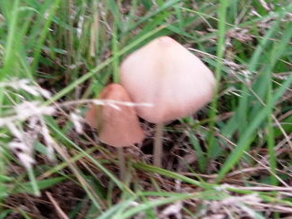

宍道サービスエリア
島根県松江市玉湯町湯町
2009/06/07 宍道SAにキノコが生えてました。
宍道SAの下りで、きのこが生えてました。

夕日を見る場所や遊具がある所近くでキノコがいくつか生えていました。木陰があるわけでないのにキノコって生えるんですね。
今日は天気が悪かったので、名物の柿ソフトを食べる気分にならなかったですし、景色もいまいちでした。
島根県松江市玉湯町湯町
宍道SAの下りで、きのこが生えてました。

夕日を見る場所や遊具がある所近くでキノコがいくつか生えていました。木陰があるわけでないのにキノコって生えるんですね。
今日は天気が悪かったので、名物の柿ソフトを食べる気分にならなかったですし、景色もいまいちでした。